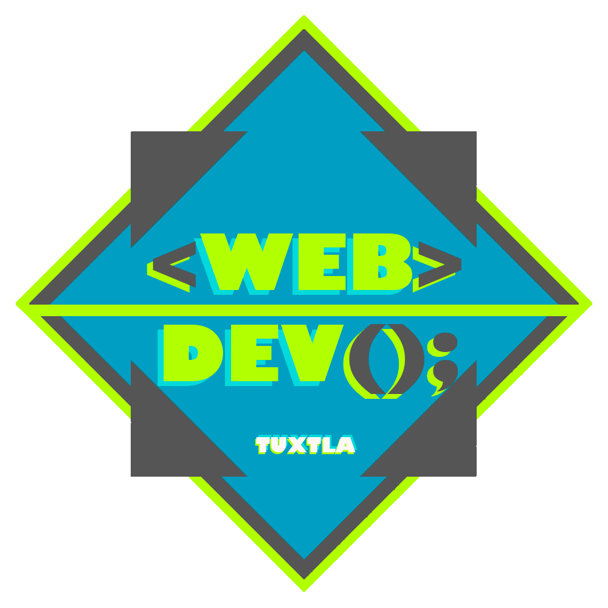

<mat-toolbar>
  <button mat-icon-button class="icon" aria-label="icon-button with menu icon" (click)="drawer.toggle()">
    <mat-icon>menu</mat-icon>
  </button>
  
  <span>{{title}}</span>
  <span class="spacer"></span>
</mat-toolbar>
<div class="root">
  <mat-drawer-container class="container" autosize>
    <mat-drawer #drawer class="sidenav" mode="side">
      <mat-list dense>
          <mat-list-item *ngIf="!isAuth">
            <a mat-button [routerLink]="['/login']">Login</a>
          </mat-list-item>
          <mat-list-item *ngIf="isAuth">
            <a mat-button [routerLink]="['/maps']">Mapa</a>
          </mat-list-item>
          <mat-list-item *ngIf="isAuth">
            <a mat-button [routerLink]="['/pluviometer']">Pluviometros</a>
          </mat-list-item>
          <!-- <mat-list-item *ngIf="isAuth">
            <a mat-button [routerLink]="['/measurements']">Mediciones</a>
          </mat-list-item> -->
          <mat-list-item *ngIf="isAuth">
            <button mat-button (click)="auth.logout()">Logout</button>
          </mat-list-item>
          <mat-divider></mat-divider>
          <mat-list-item>
            <a mat-button href="https://github.com/DarkUnknowKnigth" target="_blank">Desarollador</a>
          </mat-list-item>
          <span class="copyright">
            <a href="https://github.com/WebDevTuxtla" target="_blank">
              
            </a>
          </span>
      </mat-list>
    </mat-drawer>
    <div class="sidenav-content">
      <router-outlet></router-outlet>
    </div>
  </mat-drawer-container>
</div>
